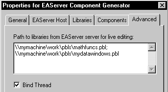
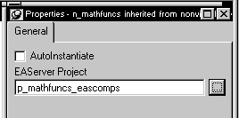

This section describes three techniques you can use to test your component:
 Troubleshooting EAServer components For more information about troubleshooting components, see
the EAServer Troubleshooting Guide
.
Troubleshooting EAServer components For more information about troubleshooting components, see
the EAServer Troubleshooting Guide
.
To test or debug a component, you can use a feature of PowerBuilder called live editing that allows you to build the project automatically from the User Object painter. When live editing is enabled, PowerBuilder builds the project for an EAServer component each time you save the corresponding user object. The generator does not deploy PBDs to EAServer, but instead tells EAServer how to access the PBLs that contain the required object definition(s).
 Service components You cannot use live editing to test a component that you have
set up as a service component. Service components are always in
use when the server is running, so the changes that you make in
the User Object painter cannot be saved.
Service components You cannot use live editing to test a component that you have
set up as a service component. Service components are always in
use when the server is running, so the changes that you make in
the User Object painter cannot be saved.
To enable live editing for a user object, you need to:


To generate an EAServer component from the User Object painter, select File>Save.
When you build a project from the User Object painter, PowerBuilder performs these operations:
PowerBuilder builds the component just as it would at deployment time, except that it does not generate PBDs for the component. In addition, it sets the pb.live_edit property to TRUE and assigns the library list you specified for live editing to the pb.librarylist property.
If the project build results in errors, PowerBuilder displays the error messages in the Output window.
If instance pooling is enabled for the user object, the generator disables pooling for the current build. Pooling is not supported with live editing because PowerBuilder cannot save the user object if the PBL that contains the user object is locked by EAServer.
When you are building a PowerBuilder custom class user object as an EAServer component, you can use the PowerBuilder debugger to debug the EAServer component. You can debug the component whether you use the live editing feature in the User Object painter or deploy the component to EAServer from the Project painter.
For more information about live editing, see "Live editing".
Before you begin debugging a remote component, check that your configuration meets the following requirements:
To begin debugging, open the target that contains the deployed components. Click the Start Remote Debugging button in the PainterBar and complete the wizard. You can select only components that were generated in PowerBuilder with remote debugging support turned on. Remote debugging support is a security setting that does not add any debugging information to the component. You turn remote debugging support on when you are testing a component, then turn it off when you deploy the component to a user's site to prevent users from stepping into and examining your code.
Set breakpoints as you would when debugging a local application, then start the client application that invokes the remote components (if it is not already running).
You will notice two major differences between debugging local and remote applications:
 Unsupported features The Objects In Memory view, expression evaluation, and changing
variable values are not supported.
Unsupported features The Objects In Memory view, expression evaluation, and changing
variable values are not supported.
The instances view shows the state of each instance of each component:
When an instance is destroyed, it is removed from the Instances view.
Multiple component instances can be stopped at the same time, but actions you take in the debugger act only on the first instance that hits a breakpoint. This instance is indicated by a yellow arrow in the Instances view. The current instance changes to the next instance in the queue when the method completes or when you click Continue.
You can also change context from one instance to another by double-clicking the new instance in the Instances view. You might want to do this if you step over a call to another component instance and the Instances view shows that the called instance stopped.
To record errors generated by PowerBuilder objects running in EAServer to the EAServer log, create an instance of the ErrorLogging service context object and invoke its log method. For example:
ErrorLogging inv_el
this.GetContextService("ErrorLogging", inv_el)
inv_el.log("Write this string to log")
You can use the ErrorLogging service to provide detailed information about the context of a system or runtime error on the server. This information is useful to system administrators and developers in resolving problems.
While you are developing components, you can use the ErrorLogging service to trace the execution of your component. For example, you can write a message to the log when you enter and exit functions. The message can identify the name of the component, whether it is entering or exiting a function, and which function it is in.
 Automatic recording of exception information Information about the exception type and location of an exception
caused by a PowerBuilder component running on the server is recorded
automatically in the server log. It is no longer necessary to invoke
the error logging service to obtain minimal information about these
exceptions.
Automatic recording of exception information Information about the exception type and location of an exception
caused by a PowerBuilder component running on the server is recorded
automatically in the server log. It is no longer necessary to invoke
the error logging service to obtain minimal information about these
exceptions.
When you use the XSL-FO technique to generate a PDF file, detailed informational and warning messages are sent to the log. You can suppress these messages by setting the PB_FOP_SUPPRESSLOG environment variable to 1.